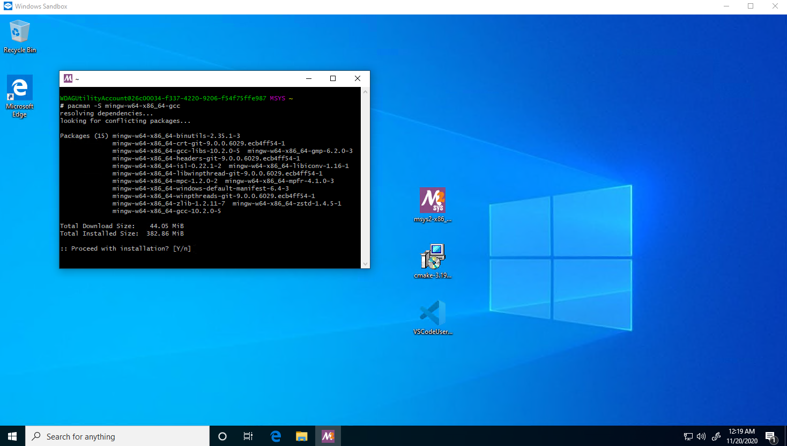

This section will step by step guide to the process of setting up a C++ development environment on Windows.
- Setting up development environment
- Using libraries
- Unit Testing
Setting up development environment
This section describes the steps to
Download & Install a C++ compiler
This section will cover the installation of GCC, Clang and MSVC.
GCC & Clang
Download & Install MSYS2
Just launch the installer and keep clicking "Next"
Install GCC
If you also want to install clang, skip this part and go directly to Install Clang, because GCC is a dependency of Clang (on MSYS2) and will be automatically installed when you install clang.
- Run MSYS2, type the following command:
pacman -Syu
pacman is the package manager used by MSYS2. -S means "sync". -y means "download fresh package databases from the server". -u means "upgrade installed packages".
This command will update the packages info, so you get the latest packages. It will prompt you like this, and you type y and hit enter.

- Then it will prompt you
To complete this update all MSYS2 processes including this terminal will be closed. Confirm to proceed [Y/n], typeyand hit enter, and it will close the window after the update is done. - Relaunch MSYS2 from your start menu. Type:
pacman -S mingw-w64-x86_64-gcc
like this, type y and hit enter to install gcc

And then type:
pacman -S mingw-w64-x86_64-make
And type y to also install make.
And then type:
pacman -S mingw-w64-x86_64-gdb
And type y to also install gdb.
-
Now search for
environment variableand open it

-
Click
Environment Variables, findPathinSystem variables, double click to open the setting.

-
Click
Newand copyC:\msys64\mingw64\binto the new entry.
-
Click
OKto close all windows. Now you finished installing GCC. Open any shell such ascmdand type ingcc --versionand you shall see the following:
Install Clang
Installing Clang will also automatically install GCC (on MSYS2).
- Run MSYS2, type the following command:
pacman -Syu
pacman is the package manager used by MSYS2. -S means "sync". -y means "download fresh package databases from the server". -u means "upgrade installed packages".
This command will update the packages info, so you get the latest packages. It will prompt you like this, and you type y and hit enter.
-
Then it will prompt you
To complete this update all MSYS2 processes including this terminal will be closed. Confirm to proceed [Y/n], typeyand hit enter, and it will close the window after the update is done. -
Relaunch MSYS2 from your start menu. Type:
pacman -S mingw-w64-x86_64-clang mingw-w64-x86_64-clang-tools-extra
like this, type y and hit enter to install clang

And then type:
pacman -S mingw-w64-x86_64-make
And type y to also install make.
And then type:
pacman -S mingw-w64-x86_64-gdb
And type y to also install gdb.
-
Now search for
environment variableand open it
-
Click
Environment Variables, findPathinSystem variables, double click to open the setting.
-
Click
Newand copyC:\msys64\mingw64\binto the new entry.
-
Click
OKto close all windows. Now you finished installing clang. Open any shell such ascmdand type inclang --versionand you shall see the following:
Note: Clang and GCC is installed to the same directory, eg. under C:\msys64\mingw64\bin. Don't be confused by the directory C:\msys64\clang64. It is an empty folder.
What is MSYS2 and Why?
MSYS2 is a collection of tools and libraries providing you with an easy-to-use environment for building, installing and running native Windows software.
But basically, we use its implementation of MingW(Minimalist GNU for Windows), which is a collection of common developing tools seen on GNU/Linux operating systems.
MSVC
MSVC is Microsoft Visual C++ compiler. And you do NOT have to install Visual Studio in order to get MSVC. However, if you also want Visual Studio, skip to setting up visual studio directly.
- Download MSVC, select
Build Tools for Visual Studio 2019 - Launch the installer and select these workflows

- You have finished installing MSVC. Click
Launchand typecland you should see this:

Do NOT try to add MSVC directly to system PATH because each compiler toolchain for different architecture has its own version.
This command prompt is specific to 64bit Windows architecture and has set some temporary environment variables. You can find it in Start -> Visual Studio 2019 -> Developer Command Prompt for VS 2019 like this: 
After MSVC is installed, cmake can detect it as a compiler.


Download & Install CMake
You can either install CMake by using the official installer or using a package manager like MSYS2,
which you used to install GCC and Clang.
-
Using the installer:
-
Download here, choose the
Windows win64-x64 Installeroption -
Launch the insatller, when you see this screen, choose
Add CMake to the system PATH for all users

Now you finished installing cmake.
-
-
Using
MSYS2:- Run
MSYS2and type this command and typeYto install
pacman -S mingw-w64-x86_64-cmake- Search for
environment variableand open it ->Environment Variables, findPathinSystem variables, double click to open the setting -> clickNewand copyC:\msys64\usr\binto the new entry.
- Run
What is CMake and Why?
CMake is a cross-platform build-system generator, which generates build files (some files dictating how your source files should be built) for your platform.
For example, on Windows by default, it generate Visual Studio Solutions (which is some files dicating how your source files should be built, native to Visual Studio) if you have Visual Studio installed. On Linux by default, it generates Unix Makefiles (which is some files dictating how your source files should be built, native to make).
Note:
It is a bug if your C/C++ project does NOT provide CMake support.
IDEs
This section will cover setting up Visual Studio but there are plenty of other choices out there like Dev-C++, CLion, QtCreator, Cevelop (based on Eclipse) and Eclipse.
Setting up Visual Studio
You can install Visual Studio as a standalone IDE or as a whole package including compiler, toolchain and windows sdk.
Full package
-
Download Visual studio. Choose the
Communityoption. -
Run the installer, select these workflows

-
After installation, you are prompt to restart your computer. And then you will need to register a Microsoft Account to continue using Visual Studio.
-
Run Visual Studio, select
Create a new project->Empty Project/Console App, and selectPlace solution and project in the same directory.


The only difference betweenEmpty ProjectandConsole Appis the latter will provide you with a "Hello world" program and that's it! All the default include directories and default linked runtime libraries are the same!
-
If you choose to create
Empty Project, right click on the<Project Name>->Add->New item->C++ source file->Add, like this:


Then write a simple "Hello world" program and hitctrl+f5to compile and run it, and you shall see this:
-
If you choose to create
Console App, you shall see the already created "Hello world". Hitctrl+f5to compile and run the program and you shall see this:
Standalone IDE
If you install Visual Studio as a standalone IDE without installing MSVC compiler toolchains, you can use it with CMake. If you have installed MSVC compiler toolchain, you can use it with Visual Studio solution just as it's a full install like above. Here I introduce how to use it with CMake, without MSVC.
-
Download Visual studio. Choose the
Communityoption. -
Run the installer, select these workflows and deselect all the optionals on the right, like this

-
After installation, you need to register a Microsoft Account to continue using Visual Studio.
-
Run Visual Studio, select
Create a new project->CMake Project-> selectPlace Project under the same directory->Create, like this:

-
Visual Studio will auto generate a "Hello world" project for you, and it can successfully configure the project and compile because CMake can detect the installed
GCC. However, it will have incorrect include errors.
-
To solve this error, click on the configuration menu ->
Manage Configurations-> click the add button -> selectMingw64-Debug-> click on the previous old configuration and click delete button


-
Hit
ctrl+sto save this configuration, then the include error should go away.
Note: If for some reason, Visual Studio doesn't detect the right MingW version, you will still get include errors. You need to edit the CMakeSettings.json and correct the MingW version, like this:


Text editors
Setting up VSCode
-
Download vscode
-
Launch the installer, when you see this screen, I strongly recommend you follow this setting

-
Run vscode, in the
extensiontab, search and install the following extensions- Install
Microsoft C/C++extension, It is a Language Server by Microsoft.

- And 2 extensions for cmake. The first one in the list is for syntax highlighting when writing cmake scirpts.
- The second one in the list is for actually running Cmake.

- Install
-
Go to settings, search
generator. And setCmake:GeneratortoMinGW Makefiles, like this:

-
Create a folder, open it in vscode. Use
ctrl + shift + pto open the command menu, typecmakeand chooseCMake: Quick Start, like this:

-
The cmake tool will scan the kits and there will be 2 kits. Select the first one.

-
Type a name for your project, select
Executable, CMake tool will automatically generate a helloworld project for you. And you probably don't want to enable ctest for now, so delete everything excpet the following 3 lines:

Rememeber to clickAllowwhen cmake want to configure the intellisense. -
And now you can run it and debug it, and have everything working (syntax highlighting, auto complete, header files...).


Debugging
This section describes how to debug in various IDEs/text editors.
Debugging in VSCode
To launch the debugger in VSCode, click the cmake project menu -> right click on the <target name> -> Debug like this: 
See more documentation for VSCode's debugging UI here, except for the part that sets launch.json because the CMake tools already handles everything 😃
Debugging in Visual Studio
Click here 
For more, see documentation here
Using libraries
Setting up vcpkg
vcpkg is a C/C++ package manager, which makes using libraries much easier (almost as easy as using pip in python).
- Open a shell(
cmd) and go to the directory where you wantvcpkgto be installed. (Something likeC:\orC:\dev) - Type this command:
git clone https://github.com/microsoft/vcpkg - Type this command:
.\vcpkg\bootstrap-vcpkg.bat - Type this command:
.\vcpkg\vcpkg.exe integrate install
Finding and Installing a library
- To find a library, use
vcpkg search <library> - To install a library, use
vcpkg install <library>:x64-windowsorvcpkg install <library>:x86-windows
[!NOTE] >
vcpkgwill build 32 bit libraries by default on Windows (although it's 64 bit on Linux by default), which is NOT probably what you want, so you want to speficy the architecture by adding:x64-windows.
Using a library
After you install the library in vcpkg, you either:
- Use
Visual Studiowithout ANY ADDITIONAL CONFIGURATION - Use
cmakewith the instruction provided byvcpkgwhen you install the library.
Below is a complete example of using vcpkg to install and use the boost library.
-
Install the library in
vcpkgwithvcpkg install <Library Name>, like this:vcpkg install boost:x64-windowsAnd you should see the following

-
Note that on Windows,
vcpkgbuilds libraries usingMSVC, so you should also useMSVCin order to link sucessfully. Header-only libraries likeboostmay be used with other compilers likeGCC.
Afrer the library finishes installing, you can either:
-
Use it in Visual Studio without doing any additional configuration

Note: Configure the solution achitectural target correctly according to your library. Visual Studio empty project defaults tox86but you may installedx64library. -
Or use it in VSCode/CLion with cmake and cmake tool chain file. See the docs here
Unit Testing
Google Test
google test is a famous and widely supported by IDEs/text editors unit testing framework for C++.
You can get google test by these ways
-
Using
vcpkg: Following setting upvcpkg, we can easily install the library byvcpkg install gtest:x64-windowsNote that if your application is targeted to 32 bit, use this command instead
vcpkg install gtest -
Using
MSYS2: Note that this can only be used withGCC & Clangcompiler fromMSYS2.pacman -S pacman -S mingw-w64-x86_64-gtest
After installing the library,
-
If you use Visual Studio (MSBuild Project), you just need to
#include <gtest/gtest.h>like a normal C++ source file and either:-
Provide a
mainfunction at the bottom of your source fileint main(int argc, char **argv) { ::testing::InitGoogleTest(&argc, argv); return RUN_ALL_TESTS(); }
-
Don't provide a
mainfunction, then you need to link additional libraries in the linker settings.- Right click on your project ->
Properties->Linker->AdditionalDependencies,
Make sure this configuration isDebugandx64
(or x86 depend on the architect or your installed Gtest library)
and add these 2 lines
gtestd.lib $(VcpkgRoot)installed\$(VcpkgTriplet)\debug\lib\manual-link\gtest_maind.lib
- Click the configuration menu to
Releaseand also add these 2 lines, like this
gtest.lib $(VcpkgRoot)installed\$(VcpkgTriplet)\lib\manual-link\gtest_main.lib
Then you should be able to write the test source file without the
mainfunction, and build in both configurations like this- Debug build
- Release build

- Right click on your project ->
-
-
If you use CMake, regardless of whether you installed
Google Testlibrary fromvcpkgorMSYS2,
you can make use ofCTestbuilt-in to Cmake as a test runner to run your google test,
which is supported by most IDE/editors you will see below.
A minimumCMakeLists.txtis like:
cmake_minimum_required(VERSION 3.10.0)
project(<project name> VERSION 0.1.0)
find_package(GTest CONFIG REQUIRED)
enable_testing()
include(GoogleTest) #for gtest_discover_tests() function
add_executable(<test target name> test.cpp) #This is the testing executable
target_link_libraries(<test target name> PRIVATE GTest::gtest GTest::gtest_main) #Link it to the google test library
gtest_discover_tests(<test target name>) #integrate google test with ctest to this testing executable
- Or you simply want a testing executable, so you don't bother with
CTest.
cmake_minimum_required(VERSION 3.10.0)
project(<project name> VERSION 0.1.0)
find_package(GTest CONFIG REQUIRED)
add_executable(<test target name> test.cpp) #This is the testing executable
target_link_libraries(<test target name> PRIVATE GTest::gtest GTest::gtest_main) #Link it to the google test library
Integration with VSCode
You need to use CTest (the first version of the minimum CMakeLists.txt) as your test runner to get the integration working.
- Install the CMake Test Explorer extension (proud contributor)
- Open VSCode settings, go to
Extension->CMake Test Explorersection, and change these following settings:- Build Config:
${buildType} - Build Dir:
${buildDirectory} - Select Cmake Integration

- Build Config:
- After that, build your project once and then click the
refresh testbutton, this plugin should find all the testing suites and test cases in your test files.
- Then you can easily manage or debug all your test cases or each individual test in this panel.
Source control
Most if not all of the development workflow involves using Git.
Also, some of CMake's functionalities requires Git to be installed.
And you also need Git to install vcpkg.
You can install Git either by using the installer or using a package manager,
like MSYS2 which we just used above to install GCC and Clang.
- Install by using the installer
- Download the installer here and then it can be installed by keep clicking
Next.
- Download the installer here and then it can be installed by keep clicking
- Install by using a package manager
- chocolatey:
choco install git - scoop:
scoop install git - winget:
winget install git
- chocolatey:
Addtional Tooling
ClangFormat
ClangFormat is a code formatting tool to help your code follow some pre-defined formatting rules.
In all IDE/editors, the actual ClangFormat executable needs to be installed first.
Integration with Visual Studio
- Install this plugin at the bottom "Visual Studio plugin installer"
- Then you can find settings in
Tools->Options->LLVM/Clang->ClangFormat

Integration with VSCode
ClangFormat is supported by VSCode C++ extension out-of-the-box.
ClangFormat settings can be found in C++ extension settings.

C/C++ include guard (proud contributor)
is a VSCode extension that automatically add include guard for you so that you no longer need to remember it.
Download here.
include-info (proud maker)
is a VSCode extension that shows the included header file size
and provide a fast way to jump to those included files.
Download here